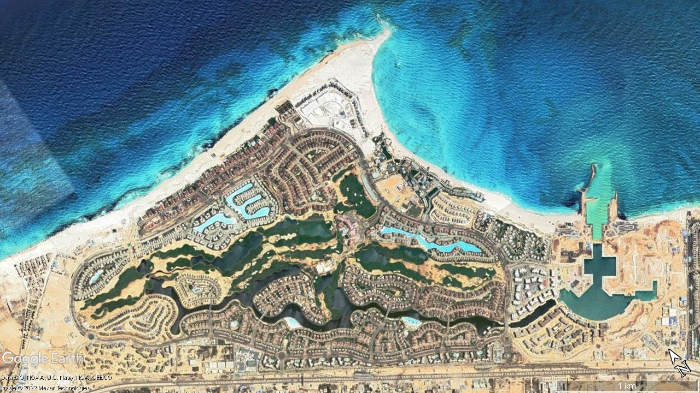
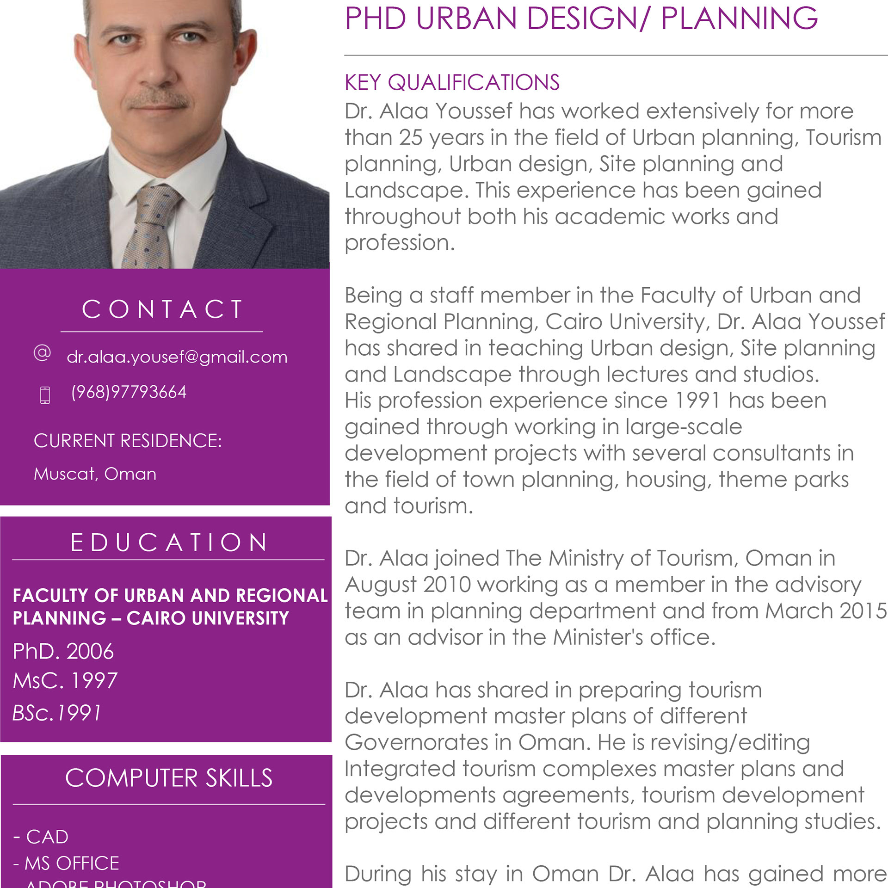

Topographic & Contextual Rigor
Master planning begins with natural geology, wadi networks, and coastal wind channels. We design stepped contours in mountainous terrain and preserved coastal setback zones.
Dr. Alaa Youssef, PhD in Planning and Urban Design, leads Tanasuq (تناسق) — a senior advisory practice specializing in mega-scale master planning, Integrated Tourism Complexes (ITCs), waterfront resort cities, and institutional campus urbanism across the Sultanate of Oman, Egypt, Saudi Arabia, and Morocco.

Leading Tanasuq (تناسق), an independent practice founded on proportion, contextual site rigor, and interdisciplinary coordination for territorial master plans and mega-scale developments.

With more than 30 years of comprehensive experience spanning academic research, statutory ministry governance, and private consulting practice, Dr. Alaaeldin Youssef has helped shape landmark master plans across the Middle East and North Africa.
For nearly two decades (1991–2010), Dr. Youssef served as a staff member at the prestigious Faculty of Urban and Regional Planning, Cairo University, teaching urban design, site planning, and landscape architecture through studios and research lectures.
As an Urban Planning Advisor in the Minister’s Office at the Ministry of Heritage and Tourism in the Sultanate of Oman, he oversaw statutory auditing and policy structuring for national Integrated Tourism Complexes (ITCs). In private practice, he has collaborated with premier international consultancies—including WATG, Arab Consulting Engineers (ACE Moharram Bakhoum), Zuhair Fayez Partnership, CDC Abdelhalim Ibrahim, and Talat Imam Consultant—on major tourism, campus, and residential master plans.
Projects featured on this website under 'Principal Experience' represent work performed by Dr. Alaaeldin Youssef during previous associations with former employers, consultancy partnerships, or government agencies. Credit is provided to the respective firms of record and client entities. Selected images and drawings remain the copyright of their original rights holders.
The Arabic principle of Tanasuq (تناسق) guides every scale of Dr. Alaa Youssef’s work — from territorial regional master plans to parcel subdivision and street corridor sections.
Master planning begins with natural geology, wadi networks, and coastal wind channels. We design stepped contours in mountainous terrain and preserved coastal setback zones.
Master plans fail when design vision and infrastructure engineering diverge. Having coordinated between WATG and ACE on Marassi, Dr. Youssef resolves spatial conflicts before ground is broken.
Drawing from senior advisory tenure at Oman’s Ministry of Tourism, our frameworks balance high-yield hospitality investment with statutory public beach access and cultural identity.
Communities thrive when vehicular traffic is tamed, providing continuous shaded pedestrian spines, cooling wind funnels, and vibrant public civic plazas.
Explore Dr. Alaaeldin Youssef's urban design portfolio organized into two distinct directions: Principal Experience and Tanasuq Projects.
Projects featured on this website under 'Principal Experience' represent work performed by Dr. Alaaeldin Youssef during previous associations with former employers, consultancy partnerships, or government agencies. Credit is provided to the respective firms of record and client entities. Selected images and drawings remain the copyright of their original rights holders.
"Dr. Alaa Youssef’s ability to coordinate complex spatial conflicts between international master planning concepts and lead infrastructure engineering on Marassi was instrumental in delivering an executable master plan."
"His statutory audits and master plan revisions for Integrated Tourism Complexes across Oman established clear development control standards, safeguarding our cultural identity while unlocking premier international investments."
"Dr. Youssef brings both deep academic rigor from Cairo University and decades of real-world site planning instinct on complex topography like King Khaled University in Abha."
Dr. Alaa Youssef personally reviews all inquiries regarding territorial master plans, Integrated Tourism Complexes (ITC) peer review, statutory audits, and campus urban design.
Muscat, Sultanate of Oman
Cairo, Arab Republic of Egypt